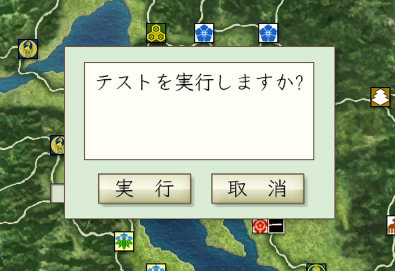

情報ダイアログや、確認ダイアログ、実行・取消の選択ダイアログなど ダイアログ系のAPI提供用オブジェクトとなります。

天翔記には元来存在しない独自のゲームタイミングで、 ユーザーに情報を提供したり、実行の取捨選択を促す場合などに利用します。
public static void My_戦略_軍団ターン変更時(int 軍団番号) { ダイアログ.Show_確認_中央("確認中央"); ダイアログ.Show_確認_下部("確認下部"); int 選択結果 = ダイアログ.Show_実行か取消_中央("テストを実行しますか?"); if (選択結果 == 列挙.ダイアログ.実行か取消.実行) { ダイアログ.Show_情報_中央("実行を選択しました"); } else { ダイアログ.Show_情報_中央("取消を選択しました"); } }
ダイアログに関する主な所は以上となります。 詳しくはHD.version.SDKソース内の「ダイアログ.h」や「ダイアログ列挙.h」を参照してください。